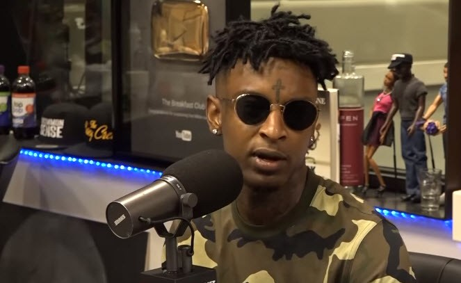
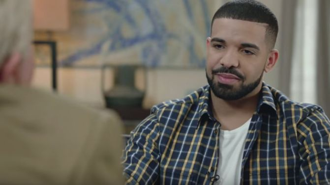
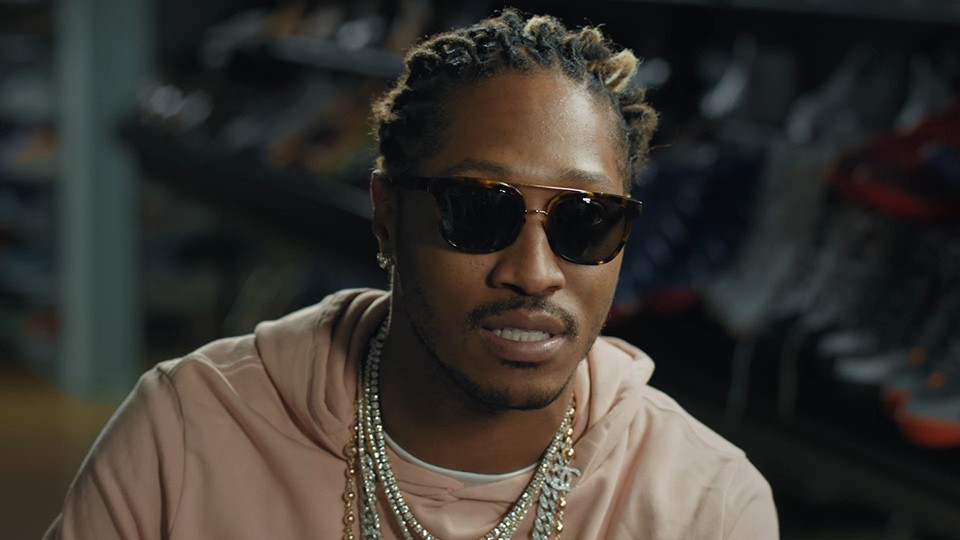

21 Savage no longer wears jewelery?
21 Savage talks about how he has recently stopped wearing jewelery to be a positive influence on the younger generation to show them expensive materialistic things are worth spening on. He said recently that "I want to introduce money management to kids so they have a bright future". 21 also talked about his interest to start investing in houses as it was a better investment saying in an interview to complex that "I see houses as the future area of investment". This seems like a very positive change from 21 and it looks like this is thr first of many changes that he will take on. Other news involves 21 savage possibly releasing a new album which he has not yet mentioned the name of. We .shall see how good it is upon release. Rumors suggest that his new album will be the best to date having multiple features and adapting a new sound of rap.
Drake's OVO brand reaching new levels
Drake talks about how OVO as a brand as grown over the past 5 years. Drake who is still part of Cash Money Records and Universal Music Group said that he feels that his OVO brand has now got into "a confortable place" which he doesn't want it to be in. By this Drake is suggesting that he wants OVO to continuosly grow and not stand still giving his competitors a chance to overtake his brand. We expect OVO to eventually become bigger than brands such as G Unit and Premium Music.
Future on life before music
There was certainly no money or fame for rapper future before music came into the equation thats for sure. In an interveiw with head-top tunes future talks about his time before the music when he had nothing. It certainly saved his life including ours with his ironically futuristic sound, hits like "Tony Montana", "Good Life" and "Before the fame" has shown that.